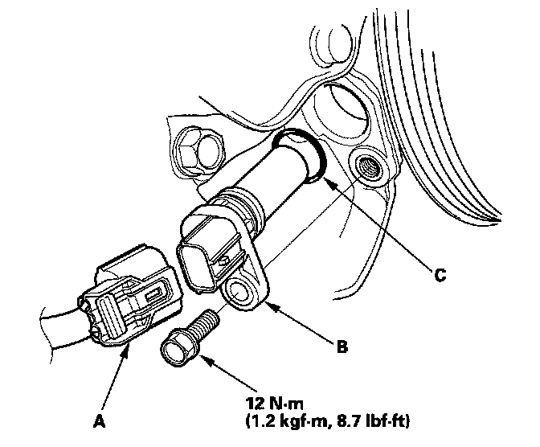

CKP Sensor Replacement
CKP Sensor Replacement

1. Disconnect the CKP sensor connector (A).
2. Remove the CKP sensor (B).
3. Install the parts in the reverse order of removal with a new O-ring (C).
4. Do the CKP pattern clear/CKP pattern learn procedure below.
Crank (CKP) Pattern Clear/Crank (CKP) Pattern Learn
Clear/Learn Procedure (with the HDS)

1. Connect the HDS to the data link connector (DLC) (A) located under the driver's side of the dashboard.
2. Turn the ignition switch ON (II).
3. Make sure the HDS communicates with the ECM. If it doesn't, go to the DLC circuit troubleshooting. Testing and Inspection
4. Select CRANK PATTERN in the ADJUSTMENT MENU with the HDS.
5. Select CRANK PATTERN LEARNING with the HDS, and follow the screen prompts.
Learn Procedure (without the HDS)
1. Start the engine. Hold the engine speed at 3,000 rpm without load (in neutral) until the radiator fan comes on.
2. Test-drive the vehicle on a level road: Decelerate (with the throttle fully closed) from an engine speed of 2,500 rpm down to 1,000 rpm with the transmission in 1st gear.
3. Test-drive the vehicle on a level road: Decelerate (with the throttle fully closed) from an engine speed of 5,000 rpm down to 3,000 rpm with the transmission in 1st gear.
4. Repeat step 2 and 3 several times.
5. Turn the ignition switch OFF.
6. Turn the ignition switch ON (II), and wait for 30 seconds.